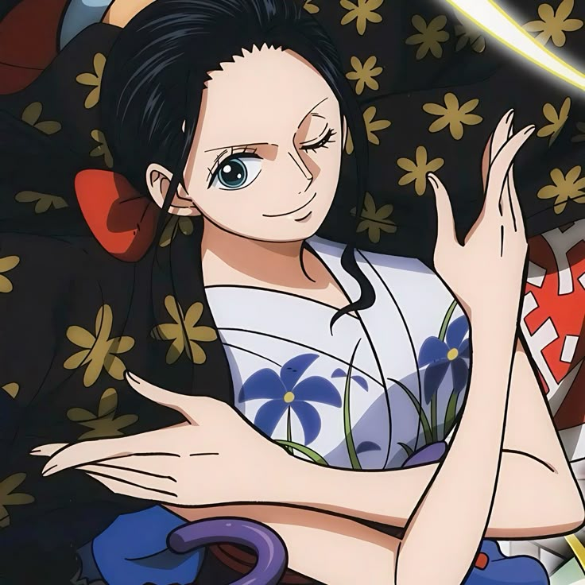
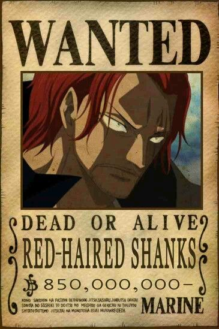

Monkey D. Luffy is the main protagonist of the anime and manga series One Piece, created by Eiichiro Oda. He is a cheerful and fearless pirate with a dream of becoming the Pirate King by finding the legendary treasure known as the "One Piece." Luffy ate the Gum-Gum Fruit (Gomu Gomu no Mi), which gave his body rubber-like properties, allowing him to stretch and perform powerful attacks. Despite his goofy and carefree nature, Luffy has a strong sense of justice and is fiercely loyal to his friends. He is the captain of the Straw Hat Pirates, a diverse and tight-knit crew that he formed during his journey across the seas. Luffy never gives up, no matter how strong his enemies are, and he often inspires others with his determination and heart. Over time, he has gained fame and respect from both allies and enemies across the world. His adventurous spirit and belief in freedom make him a true symbol of hope in the world of pirates.
Luffy is known for his iconic straw hat, which was given to him by his idol, Red-Haired Shanks, and it symbolizes his promise to become a great pirate. He doesn't care about fame or wealth; his only goal is to live freely and protect the people he cares about. Luffy’s fighting style is unique due to his rubber body, and he constantly evolves by developing new powerful techniques like Gear Second, Gear Third, and Gear Fourth. As he travels through the Grand Line, he faces dangerous enemies, corrupt governments, and powerful warlords. Despite the challenges, he always stays true to his morals and never compromises his beliefs. Luffy treats his crew as family and would risk his life for any one of them without hesitation. His unwavering spirit, simplicity, and boldness have made him one of the most beloved characters in anime history. Luffy’s journey is a tale of courage, friendship, and the pursuit of dreams.
|
Zoro Zoro is a powerful swordsman and one of the main crew members in One Piece. He uses a unique three-sword style and dreams of becoming the world’s greatest swordsman. Loyal and fearless, Zoro always stands by Luffy and never backs down from a challenge. |
Nami Nami is the navigator of the Straw Hat Pirates in One Piece, known for her intelligence and map-making skills. She dreams of creating a complete map of the world. Though she loves money, she deeply cares for her crew and plays a key role in guiding them through dangerous seas. |

Usopp Usopp is the sharpshooter of the Straw Hat Pirates in One Piece, known for his creativity and clever inventions. Though often scared, he shows great courage when it truly matters. He dreams of becoming a brave warrior of the sea like his father. |
Sanji Sanji is the cook of the Straw Hat Pirates in One Piece, known for his exceptional culinary skills and powerful kicking techniques. He dreams of finding the All Blue, a legendary sea with fish from all oceans. Sanji is chivalrous, especially toward women, and fiercely loyal to his crew. |
|
Chopper Chopper is the doctor of the Straw Hat Pirates in One Piece, a reindeer who gained human abilities after eating the Human-Human Fruit. He's kind-hearted, curious, and skilled in medicine despite his young age. Often mistaken for a pet, Chopper dreams of curing any illness in the world. |

Robin Robin is the archaeologist of the Straw Hat Pirates in One Piece, with the ability to sprout body parts using the Flower-Flower Fruit. She is calm, intelligent, and deeply interested in uncovering the true history of the world. Robin dreams of discovering the secrets of the Void Century by finding the Rio Poneglyph. |
Franky Franky is the shipwright of the Straw Hat Pirates in One Piece, a cyborg with incredible strength and mechanical skills. He built the crew’s ship, the Thousand Sunny, and constantly upgrades it with powerful features. Loud, flashy, and proud of his work, Franky dreams of building a ship that sails to the end of the world. |
Brook Brook is the musician of the Straw Hat Pirates in One Piece, a living skeleton brought back to life by the Revive-Revive Fruit. He’s cheerful, loves music, and often makes bone-related jokes. Brook dreams of reuniting with Laboon, a whale he promised to see again many years ago. |
|
 Red Hair Shanks Shanks, also known as Red-Haired Shanks, is one of the Four Emperors in One Piece and captain of the Red-Haired Pirates. Known for his powerful Haki and calm nature, he values peace but commands great respect. He inspired Luffy to become a pirate and entrusted him with his iconic straw hat. Shanks remains a mysterious yet influential figure in the series. |
 Black Beard Marshall D. Teach, known as Blackbeard, is one of the most dangerous and ambitious pirates in One Piece. As a member of the Four Emperors, he possesses the rare ability to use two Devil Fruits: the Yami Yami no Mi and the Gura Gura no Mi. Cunning and ruthless, Blackbeard betrayed Whitebeard’s crew and has rapidly risen in power. His actions continue to shake the balance of the pirate world. |
Straw Hat Luffy Monkey D. Luffy is the captain of the Straw Hat Pirates and the main hero of One Piece. He gained rubber-like abilities from eating the Gomu Gomu no Mi, later revealed as the mythical Hito Hito no Mi, Model: Nika. Luffy dreams of becoming the Pirate King and is known for his fearless spirit, loyalty to his crew, and love for freedom. His journey has made him one of the most powerful and inspiring figures in the Grand Line. |
 Buggy The Clown Buggy the Clown is a former Roger Pirate and now one of the Four Emperors in One Piece. With the powers of the Bara Bara no Mi, he can split his body into pieces and resist slashing attacks. Known for his loud personality and comic antics, Buggy often stumbles into power through luck and manipulation. Despite his flaws, he’s become a surprisingly influential figure in the pirate world. |